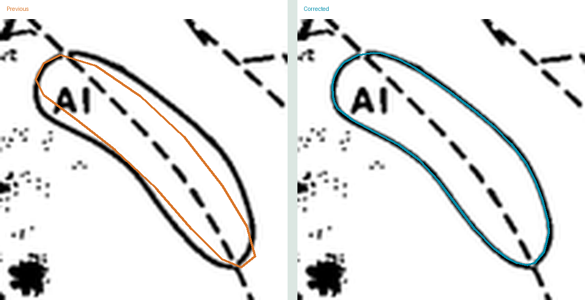

All 72 earlier saved views in Krubitzer & Kaas (1990, 1993) were reviewed against the source. Coarse and off-stroke contours were refined, areas and native ImageJ exports rebuilt, and previous geometry archived. The source-toggle reviews let you enlarge individual fields.
| Paper | Audit scope | Review and results |
|---|---|---|
| Krubitzer & Kaas (1990) | 56 saved views reviewed | Source toggles and field enlargement Area changes · Per-region audit |
| Krubitzer & Kaas (1993) | 16 saved views reviewed | Source toggles and field enlargement Area changes · Per-region audit |
| Beck & Kaas (1998) | Previous refinement retained | Refined contour review |
| Huffman et al. (1999) | Previous refinement retained | Refined contour review |
| Kaas et al. (2011) | No eligible specimen contours | Source assessment |
Dotted markers, dashed strokes and obscured borders do not establish a uniquely precise continuous boundary. These limitations remain explicit; existing dense traces and source-limited interpolations were retained where further changes were not justified. Missing areas remain missing.
Source calibration, specimen relationships and inclusion rules are preserved. The 1990 whole-tissue mask areas are unchanged. No cross-paper pooling was performed. Native ROI/mask/calibration checks and numerical/overlap checks pass; anatomical interpretation remains provisional.
Previous (orange) and corrected (teal), over the same source pixels. The old contour sat inside the printed ellipse.
